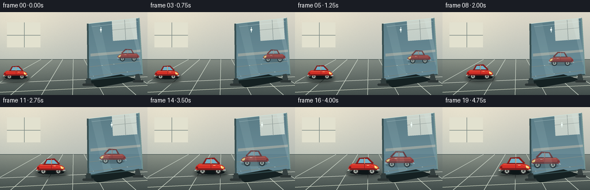
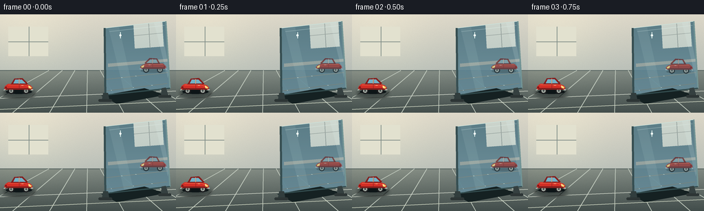
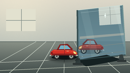

CODING AGENTS AS PIXEL WORLD MODELS
traex/GPT-5.6-Sol · phygen_063
点击播放 · 原生 RGB 像素
逐轮保存的候选
回放视频、检查图与代码变化。
每份候选均可单独播放。实际图片检查记录在下方工具轨迹中。
候选 01播放与检查图
点击播放 · 原生 RGB 像素


展开代码变化
--- 上一保存版本
+++ 本次保存版本
@@ -0,0 +1,203 @@
+from pathlib import Path
+import math
+import json
+import numpy as np
+from PIL import Image, ImageDraw, ImageFilter
+import artifact_io
+
+CASE_DIR = Path(__file__).resolve().parent
+SPEC = json.loads((CASE_DIR / 'task_spec.json').read_text())
+W, H, N = SPEC['width'], SPEC['height'], SPEC['frames']
+SS = 4
+SW, SH = W * SS, H * SS
+
+def sc(v): return int(round(v * SS))
+def pts(seq): return [(sc(x), sc(y)) for x, y in seq]
+
+def ellipse(d, box, fill, outline=None, width=1):
+ d.ellipse(tuple(sc(v) for v in box), fill=fill, outline=outline, width=sc(width) if outline else 1)
+def rect(d, box, fill, outline=None, width=1):
+ d.rectangle(tuple(sc(v) for v in box), fill=fill, outline=outline, width=sc(width) if outline else 1)
+def roundrect(d, box, r, fill, outline=None, width=1):
+ d.rounded_rectangle(tuple(sc(v) for v in box), radius=sc(r), fill=fill, outline=outline, width=sc(width) if outline else 1)
+def line(d, xy, fill, width=1):
+ d.line(pts(xy), fill=fill, width=sc(width), joint='curve')
+def poly(d, xy, fill): d.polygon(pts(xy), fill=fill)
+
+# Stable, subtle surface grain so the scene feels photographed rather than flat.
+rng = np.random.default_rng(6301)
+grain = rng.normal(0, 1.7, (SH, SW, 1))
+
+def draw_car(layer, cx, baseline, scale, facing, wheel_phase,
+ reflected=False, alpha=255):
+ d = ImageDraw.Draw(layer, 'RGBA')
+ def tr(x, y):
+ return (sc(cx + facing * x * scale), sc(baseline + y * scale))
+ def tpoly(shape): return [tr(x, y) for x, y in shape]
+ def tellipse(box, fill, outline=None, width=1):
+ x0,y0,x1,y1=box
+ q=[tr(x0,y0),tr(x1,y1)]
+ bb=(min(q[0][0],q[1][0]), min(q[0][1],q[1][1]), max(q[0][0],q[1][0]), max(q[0][1],q[1][1]))
+ d.ellipse(bb, fill=fill, outline=outline, width=max(1,sc(width*scale)))
+ def tline(xy, fill, width=1):
+ d.line([tr(x,y) for x,y in xy], fill=fill, width=max(1,sc(width*scale)), joint='curve')
+
+ # Reflections are cooler and slightly dimmer, but preserve every car detail.
+ if reflected:
+ red=(161,53,48,alpha); red_dark=(106,39,40,alpha)
+ cream=(206,205,188,alpha); glass=(116,157,170,alpha)
+ chrome=(190,211,211,alpha); tire=(24,34,38,alpha)
+ else:
+ red=(211,47,38,alpha); red_dark=(131,31,30,alpha)
+ cream=(250,224,169,alpha); glass=(113,177,198,alpha)
+ chrome=(232,238,224,alpha); tire=(28,29,31,alpha)
+
+ # Ground contact and soft body shadow.
+ tellipse((-24,-6,25,2), (13,21,23,52 if reflected else 72))
+
+ # Wheels behind body.
+ for wx in (-14, 14):
+ tellipse((wx-6,-10,wx+6,2), tire)
+ tellipse((wx-3.7,-7.7,wx+3.7,-0.3), (174,181,172,alpha))
+ tellipse((wx-1.6,-5.6,wx+1.6,-2.4), (70,78,77,alpha))
+ for k in range(4):
+ a=wheel_phase+k*math.pi/2
+ tline([(wx+1.7*math.cos(a),-4+1.7*math.sin(a)),
+ (wx+3.3*math.cos(a),-4+3.3*math.sin(a))], (73,84,84,alpha), .7)
+
+ # Main rounded toy body and its darker rocker panel.
+ d.polygon(tpoly([(-25,-13),(-20,-17),(14,-17),(22,-14),(26,-10),(24,-6),(-24,-6),(-27,-9)]), fill=red)
+ d.polygon(tpoly([(-24,-9),(24,-9),(22,-6),(-23,-6)]), fill=red_dark)
+ # Cabin, roof and windows.
+ d.polygon(tpoly([(-14,-17),(-8,-27),(7,-28),(17,-18),(15,-16),(-15,-16)]), fill=red_dark)
+ d.polygon(tpoly([(-10,-18),(-6.5,-25),(0,-25),(0,-18)]), fill=glass)
+ d.polygon(tpoly([(2,-25),(6,-25),(13,-18),(2,-18)]), fill=glass)
+ tline([(1,-26),(1,-17)], cream, .9)
+ # Highlights and toy detailing.
+ tline([(-20,-15),(12,-15),(18,-12)], (244,105,78,alpha), .8)
+ d.polygon(tpoly([(18,-14),(24,-11),(23,-8),(19,-9)]), fill=(246,211,110,alpha))
+ d.polygon(tpoly([(-25,-12),(-22,-12),(-22,-9),(-26,-9)]), fill=(129,26,27,alpha))
+ tline([(-25,-6),(-28,-5)], chrome, 1.2)
+ tline([(23,-6),(27,-6)], chrome, 1.2)
+ tellipse((18.5,-13,21,-10.5), (255,232,153,alpha))
+ # Door seam and handle.
+ tline([(1,-17),(1,-8)], (119,31,31,alpha), .7)
+ tline([(5,-14),(9,-14)], cream, .7)
+
+
+def make_frame(i):
+ t=i/(N-1)
+ # Gentle ease-in/out while remaining unmistakably continuous and synchronous.
+ p=t*t*(3-2*t)
+ arr=np.zeros((SH,SW,3),dtype=np.float32)
+ # Warm studio wall and foreground floor gradients.
+ horizon=sc(82)
+ for y in range(SH):
+ yy=y/SS
+ if yy<82:
+ q=yy/82
+ c=np.array([220,215,200])*(1-q)+np.array([185,191,184])*q
+ else:
+ q=(yy-82)/(H-82)
+ c=np.array([128,137,130])*(1-q)+np.array([66,77,75])*q
+ arr[y,:,0]=c[0]; arr[y,:,1]=c[1]; arr[y,:,2]=c[2]
+ # broad left window illumination
+ xx=np.arange(SW)[None,:]/SS
+ yy=np.arange(SH)[:,None]/SS
+ glow=np.exp(-((xx-38)**2/(2*52**2)+(yy-34)**2/(2*48**2)))[:,:,None]
+ arr += glow*np.array([16,14,8])
+ arr += grain
+ arr=np.clip(arr,0,255).astype(np.uint8)
+ im=Image.fromarray(arr,'RGB').convert('RGBA')
+ d=ImageDraw.Draw(im,'RGBA')
+
+ # Background architectural hints and floor perspective establish a real miniature set.
+ line(d,[(0,82),(256,82)],(77,91,88,110),1)
+ rect(d,(12,18,70,61),(226,225,207,48))
+ line(d,[(42,18),(42,61)],(126,139,134,40),1)
+ line(d,[(12,40),(70,40)],(126,139,134,40),1)
+ for x in (-40,18,72,126,180,236,290):
+ line(d,[(x,144),(128+(x-128)*.34,82)],(190,199,187,22),1)
+ line(d,[(0,123),(256,112)],(210,216,203,18),1)
+
+ # Glass/mirror plane: standing, slightly angled, with a luminous reflected room.
+ glass_poly=[(152,20),(241,10),(247,108),(153,118)]
+ mask=Image.new('L',(SW,SH),0); md=ImageDraw.Draw(mask)
+ md.polygon(pts(glass_poly),fill=255)
+ pane=Image.new('RGBA',(SW,SH),(0,0,0,0)); pd=ImageDraw.Draw(pane,'RGBA')
+ # Cool reflected interior gradient.
+ for y0 in range(sc(9),sc(119)):
+ q=(y0/SS-10)/110
+ col=(73+int(30*q),112+int(28*q),125+int(29*q),224)
+ pd.line([(0,y0),(SW,y0)],fill=col,width=1)
+ # Reflected high window and distant shelf.
+ pd.polygon(pts([(194,15),(236,11),(238,47),(196,50)]),fill=(186,214,214,95))
+ pd.line(pts([(216,13),(218,49)]),fill=(58,91,101,100),width=sc(1))
+ pd.line(pts([(195,31),(237,27)]),fill=(58,91,101,90),width=sc(1))
+ pd.polygon(pts([(157,72),(244,65),(245,69),(157,77)]),fill=(29,66,76,64))
+ pd.line(pts([(154,112),(243,101)]),fill=(191,215,208,34),width=sc(1))
+ pd.line(pts([(154,95),(244,85)]),fill=(191,215,208,25),width=sc(1))
+ pane.putalpha(Image.composite(pane.getchannel('A'),Image.new('L',(SW,SH),0),mask))
+ im.alpha_composite(pane)
+
+ # Compute true car front position and a compressed perspective mirror distance.
+ car_scale=.78+.24*p
+ car_cx=27+99*p
+ car_front=car_cx+26*car_scale
+ ref_scale=.72+.24*p
+ mirror_edge=153.0
+ ref_front=mirror_edge + .48*(mirror_edge-car_front)
+ ref_cx=ref_front + 26*ref_scale # left-facing front is center - 26*scale
+ ref_base=84+20*p
+ phase=(car_cx-27)/5.0
+
+ # Synchronized reflected toy, clipped precisely to the glass surface.
+ refl=Image.new('RGBA',(SW,SH),(0,0,0,0))
+ draw_car(refl,ref_cx,ref_base,ref_scale,-1,-phase,reflected=True,alpha=190)
+ ra=np.array(refl.getchannel('A'),dtype=np.uint16)
+ ma=np.array(mask,dtype=np.uint16)
+ refl.putalpha(Image.fromarray(((ra*ma)//255).astype(np.uint8),'L'))
+ im.alpha_composite(refl)
+
+ # Glass surface sheen lies over the reflection.
+ sheen=Image.new('RGBA',(SW,SH),(0,0,0,0)); sd=ImageDraw.Draw(sheen,'RGBA')
+ sd.polygon(pts([(158,21),(173,19),(194,113),(181,115)]),fill=(219,245,239,20))
+ sd.polygon(pts([(224,12),(233,11),(246,82),(244,93)]),fill=(235,255,252,31))
+ sd.line(pts([(159,25),(239,16)]),fill=(234,255,250,80),width=sc(1))
+ sa=np.array(sheen.getchannel('A'),dtype=np.uint16)
+ sheen.putalpha(Image.fromarray(((sa*ma)//255).astype(np.uint8),'L'))
+ im.alpha_composite(sheen)
+
+ # Cast shadow of the panel, outer glass edges, and free-standing feet.
+ d=ImageDraw.Draw(im,'RGBA')
+ poly(d,[(147,119),(210,108),(241,118),(170,131)],(21,33,34,38))
+ line(d,glass_poly+[glass_poly[0]],(203,226,219,180),1)
+ line(d,[(152,20),(153,118)],(54,78,81,235),3)
+ line(d,[(241,10),(247,108)],(114,148,149,170),2)
+ line(d,[(153,118),(247,108)],(50,75,77,210),2)
+ # mounts make 'standing glass' explicit
+ poly(d,[(150,115),(157,115),(159,126),(148,126)],(49,61,61,255))
+ roundrect(d,(143,124,163,128),2,(45,53,53,255))
+ poly(d,[(235,108),(241,107),(245,119),(234,120)],(53,64,64,245))
+ roundrect(d,(230,118,249,122),2,(45,53,53,245))
+ # tiny moving light glint on pane, independent of semantic motion
+ gx=175+32*t
+ ellipse(d,(gx-1.6,29,gx+1.6,32.2),(242,255,248,125))
+ line(d,[(gx,26),(gx,35)],(241,255,249,75),1)
+
+ # Actual car shadow is on the studio floor and lengthens toward the glass.
+ shadow=Image.new('RGBA',(SW,SH),(0,0,0,0)); sh=ImageDraw.Draw(shadow,'RGBA')
+ sh.ellipse((sc(car_cx-29*car_scale),sc(107),sc(car_cx+30*car_scale),sc(122)),fill=(10,18,19,100))
+ shadow=shadow.filter(ImageFilter.GaussianBlur(sc(2.4)))
+ im.alpha_composite(shadow)
+ draw_car(im,car_cx,115,car_scale,1,phase,reflected=False,alpha=255)
+
+ # Foreground warm specular strip and a little depth haze at the far left.
+ d=ImageDraw.Draw(im,'RGBA')
+ line(d,[(0,139),(256,127)],(211,218,197,17),1)
+ out=im.convert('RGB').resize((W,H),Image.Resampling.LANCZOS)
+ return np.asarray(out,dtype=np.uint8)
+
+frames=np.stack([make_frame(i) for i in range(N)],axis=0)
+artifact_io.save(frames,CASE_DIR)
+print('saved',frames.shape,frames.dtype)
可观测工具轨迹
实际执行的命令与返回图片。
命令 1exit 0
/bin/bash -lc "ls -la && printf '\\n--- prompt.txt ---\\n' && cat prompt.txt && printf '\\n--- GENERATION_RULES.md ---\\n' && cat GENERATION_RULES.md && printf '\\n--- task_spec.json ---\\n' && cat task_spec.json"
命令 2exit 0
/bin/bash -lc "find . -maxdepth 2 -type f -printf '%p\\n' | sort"
命令 3exit 0
/bin/bash -lc 'cat artifact_io.py'
命令 4exit 0
/bin/bash -lc "cat > generate.py <<'PY'
from pathlib import Path
import math
import json
import numpy as np
from PIL import Image, ImageDraw, ImageFilter
import artifact_io
CASE_DIR = Path(__file__).resolve().parent
SPEC = json.loads((CASE_DIR / 'task_spec.json').read_text())
W, H, N = SPEC['width'], SPEC['height'], SPEC['frames']
SS = 4
SW, SH = W * SS, H * SS
def sc(v): return int(round(v * SS))
def pts(seq): return [(sc(x), sc(y)) for x, y in seq]
def ellipse(d, box, fill, outline=None, width=1):
d.ellipse(tuple(sc(v) for v in box), fill=fill, outline=outline, width=sc(width) if outline else 1)
def rect(d, box, fill, outline=None, width=1):
d.rectangle(tuple(sc(v) for v in box), fill=fill, outline=outline, width=sc(width) if outline else 1)
def roundrect(d, box, r, fill, outline=None, width=1):
d.rounded_rectangle(tuple(sc(v) for v in box), radius=sc(r), fill=fill, outline=outline, width=sc(width) if outline else 1)
def line(d, xy, fill, width=1):
d.line(pts(xy), fill=fill, width=sc(width), joint='curve')
def poly(d, xy, fill): d.polygon(pts(xy), fill=fill)
# Stable, subtle surface grain so the scene feels photographed rather than flat.
rng = np.random.default_rng(6301)
grain = rng.normal(0, 1.7, (SH, SW, 1))
def draw_car(layer, cx, baseline, scale, facing, wheel_phase,
reflected=False, alpha=255):
d = ImageDraw.Draw(layer, 'RGBA')
def tr(x, y):
return (sc(cx + facing * x * scale), sc(baseline + y * scale))
def tpoly(shape): return [tr(x, y) for x, y in shape]
def tellipse(box, fill, outline=None, width=1):
x0,y0,x1,y1=box
q=[tr(x0,y0),tr(x1,y1)]
bb=(min(q[0][0],q[1][0]), min(q[0][1],q[1][1]), max(q[0][0],q[1][0]), max(q[0][1],q[1][1]))
d.ellipse(bb, fill=fill, outline=outline, width=max(1,sc(width*scale)))
def tline(xy, fill, width=1):
d.line([tr(x,y) for x,y in xy], fill=fill, width=max(1,sc(width*scale)), joint='curve')
# Reflections are cooler and slightly dimmer, but preserve every car detail.
if reflected:
red=(161,53,48,alpha); red_dark=(106,39,40,alpha)
cream=(206,205,188,alpha); glass=(116,157,170,alpha)
chrome=(190,211,211,alpha); tire=(24,34,38,alpha)
else:
red=(211,47,38,alpha); red_dark=(131,31,30,alpha)
cream=(250,224,169,alpha); glass=(113,177,198,alpha)
chrome=(232,238,224,alpha); tire=(28,29,31,alpha)
# Ground contact and soft body shadow.
tellipse((-24,-6,25,2), (13,21,23,52 if reflected else 72))
# Wheels behind body.
for wx in (-14, 14):
tellipse((wx-6,-10,wx+6,2), tire)
tellipse((wx-3.7,-7.7,wx+3.7,-0.3), (174,181,172,alpha))
tellipse((wx-1.6,-5.6,wx+1.6,-2.4), (70,78,77,alpha))
for k in range(4):
a=wheel_phase+k*math.pi/2
tline([(wx+1.7*math.cos(a),-4+1.7*math.sin(a)),
(wx+3.3*math.cos(a),-4+3.3*math.sin(a))], (73,84,84,alpha), .7)
# Main rounded toy body and its darker rocker panel.
d.polygon(tpoly([(-25,-13),(-20,-17),(14,-17),(22,-14),(26,-10),(24,-6),(-24,-6),(-27,-9)]), fill=red)
d.polygon(tpoly([(-24,-9),(24,-9),(22,-6),(-23,-6)]), fill=red_dark)
# Cabin, roof and windows.
d.polygon(tpoly([(-14,-17),(-8,-27),(7,-28),(17,-18),(15,-16),(-15,-16)]), fill=red_dark)
d.polygon(tpoly([(-10,-18),(-6.5,-25),(0,-25),(0,-18)]), fill=glass)
d.polygon(tpoly([(2,-25),(6,-25),(13,-18),(2,-18)]), fill=glass)
tline([(1,-26),(1,-17)], cream, .9)
# Highlights and toy detailing.
tline([(-20,-15),(12,-15),(18,-12)], (244,105,78,alpha), .8)
d.polygon(tpoly([(18,-14),(24,-11),(23,-8),(19,-9)]), fill=(246,211,110,alpha))
d.polygon(tpoly([(-25,-12),(-22,-12),(-22,-9),(-26,-9)]), fill=(129,26,27,alpha))
tline([(-25,-6),(-28,-5)], chrome, 1.2)
tline([(23,-6),(27,-6)], chrome, 1.2)
tellipse((18.5,-13,21,-10.5), (255,232,153,alpha))
# Door seam and handle.
tline([(1,-17),(1,-8)], (119,31,31,alpha), .7)
tline([(5,-14),(9,-14)], cream, .7)
def make_frame(i):
t=i/(N-1)
# Gentle ease-in/out while remaining unmistakably continuous and synchronous.
p=t*t*(3-2*t)
arr=np.zeros((SH,SW,3),dtype=np.float32)
# Warm studio wall and foreground floor gradients.
horizon=sc(82)
for y in range(SH):
yy=y/SS
if yy<82:
q=yy/82
c=np.array([220,215,200])*(1-q)+np.array([185,191,184])*q
else:
q=(yy-82)/(H-82)
c=np.array([128,137,130])*(1-q)+np.array([66,77,75])*q
arr[y,:,0]=c[0]; arr[y,:,1]=c[1]; arr[y,:,2]=c[2]
# broad left window illumination
xx=np.arange(SW)[None,:]/SS
yy=np.arange(SH)[:,None]/SS
glow=np.exp(-((xx-38)**2/(2*52**2)+(yy-34)**2/(2*48**2)))[:,:,None]
arr += glow*np.array([16,14,8])
arr += grain
arr=np.clip(arr,0,255).astype(np.uint8)
im=Image.fromarray(arr,'RGB').convert('RGBA')
d=ImageDraw.Draw(im,'RGBA')
# Background architectural hints and floor perspective establish a real miniature set.
line(d,[(0,82),(256,82)],(77,91,88,110),1)
rect(d,(12,18,70,61),(226,225,207,48))
line(d,[(42,18),(42,61)],(126,139,134,40),1)
line(d,[(12,40),(70,40)],(126,139,134,40),1)
for x in (-40,18,72,126,180,236,290):
line(d,[(x,144),(128+(x-128)*.34,82)],(190,199,187,22),1)
line(d,[(0,123),(256,112)],(210,216,203,18),1)
# Glass/mirror plane: standing, slightly angled, with a luminous reflected room.
glass_poly=[(152,20),(241,10),(247,108),(153,118)]
mask=Image.new('L',(SW,SH),0); md=ImageDraw.Draw(mask)
md.polygon(pts(glass_poly),fill=255)
pane=Image.new('RGBA',(SW,SH),(0,0,0,0)); pd=ImageDraw.Draw(pane,'RGBA')
# Cool reflected interior gradient.
for y0 in range(sc(9),sc(119)):
q=(y0/SS-10)/110
col=(73+int(30*q),112+int(28*q),125+int(29*q),224)
pd.line([(0,y0),(SW,y0)],fill=col,width=1)
# Reflected high window and distant shelf.
pd.polygon(pts([(194,15),(236,11),(238,47),(196,50)]),fill=(186,214,214,95))
pd.line(pts([(216,13),(218,49)]),fill=(58,91,101,100),width=sc(1))
pd.line(pts([(195,31),(237,27)]),fill=(58,91,101,90),width=sc(1))
pd.polygon(pts([(157,72),(244,65),(245,69),(157,77)]),fill=(29,66,76,64))
pd.line(pts([(154,112),(243,101)]),fill=(191,215,208,34),width=sc(1))
pd.line(pts([(154,95),(244,85)]),fill=(191,215,208,25),width=sc(1))
pane.putalpha(Image.composite(pane.getchannel('A'),Image.new('L',(SW,SH),0),mask))
im.alpha_composite(pane)
# Compute true car front position and a compressed perspective mirror distance.
car_scale=.78+.24*p
car_cx=27+99*p
car_front=car_cx+26*car_scale
ref_scale=.72+.24*p
mirror_edge=153.0
ref_front=mirror_edge + .48*(mirror_edge-car_front)
ref_cx=ref_front + 26*ref_scale # left-facing front is center - 26*scale
ref_base=84+20*p
phase=(car_cx-27)/5.0
# Synchronized reflected toy, clipped precisely to the glass surface.
refl=Image.new('RGBA',(SW,SH),(0,0,0,0))
draw_car(refl,ref_cx,ref_base,ref_scale,-1,-phase,reflected=True,alpha=190)
ra=np.array(refl.getchannel('A'),dtype=np.uint16)
ma=np.array(mask,dtype=np.uint16)
refl.putalpha(Image.fromarray(((ra*ma)//255).astype(np.uint8),'L'))
im.alpha_composite(refl)
# Glass surface sheen lies over the reflection.
sheen=Image.new('RGBA',(SW,SH),(0,0,0,0)); sd=ImageDraw.Draw(sheen,'RGBA')
sd.polygon(pts([(158,21),(173,19),(194,113),(181,115)]),fill=(219,245,239,20))
sd.polygon(pts([(224,12),(233,11),(246,82),(244,93)]),fill=(235,255,252,31))
sd.line(pts([(159,25),(239,16)]),fill=(234,255,250,80),width=sc(1))
sa=np.array(sheen.getchannel('A'),dtype=np.uint16)
sheen.putalpha(Image.fromarray(((sa*ma)//255).astype(np.uint8),'L'))
im.alpha_composite(sheen)
# Cast shadow of the panel, outer glass edges, and free-standing feet.
d=ImageDraw.Draw(im,'RGBA')
poly(d,[(147,119),(210,108),(241,118),(170,131)],(21,33,34,38))
line(d,glass_poly+[glass_poly[0]],(203,226,219,180),1)
line(d,[(152,20),(153,118)],(54,78,81,235),3)
line(d,[(241,10),(247,108)],(114,148,149,170),2)
line(d,[(153,118),(247,108)],(50,75,77,210),2)
# mounts make 'standing glass' explicit
poly(d,[(150,115),(157,115),(159,126),(148,126)],(49,61,61,255))
roundrect(d,(143,124,163,128),2,(45,53,53,255))
poly(d,[(235,108),(241,107),(245,119),(234,120)],(53,64,64,245))
roundrect(d,(230,118,249,122),2,(45,53,53,245))
# tiny moving light glint on pane, independent of semantic motion
gx=175+32*t
ellipse(d,(gx-1.6,29,gx+1.6,32.2),(242,255,248,125))
line(d,[(gx,26),(gx,35)],(241,255,249,75),1)
# Actual car shadow is on the studio floor and lengthens toward the glass.
shadow=Image.new('RGBA',(SW,SH),(0,0,0,0)); sh=ImageDraw.Draw(shadow,'RGBA')
sh.ellipse((sc(car_cx-29*car_scale),sc(107),sc(car_cx+30*car_scale),sc(122)),fill=(10,18,19,100))
shadow=shadow.filter(ImageFilter.GaussianBlur(sc(2.4)))
im.alpha_composite(shadow)
draw_car(im,car_cx,115,car_scale,1,phase,reflected=False,alpha=255)
# Foreground warm specular strip and a little depth haze at the far left.
d=ImageDraw.Draw(im,'RGBA')
line(d,[(0,139),(256,127)],(211,218,197,17),1)
out=im.convert('RGB').resize((W,H),Image.Resampling.LANCZOS)
return np.asarray(out,dtype=np.uint8)
frames=np.stack([make_frame(i) for i in range(N)],axis=0)
artifact_io.save(frames,CASE_DIR)
print('saved',frames.shape,frames.dtype)
PY
python generate.py
ls -lh pixels.npz inspection.png index.html frames/00.png frames/19.png"视觉工具实际返回图片 1

视觉工具实际返回图片 2

保存候选 1 份；完成命令 4 次；可验证图片返回 2 张。原始 API 响应与完整日志保留在本地。